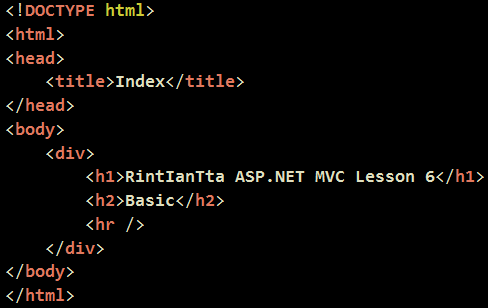
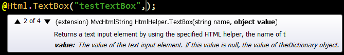
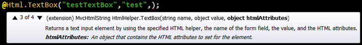
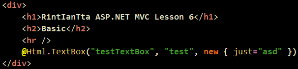

HtmlHelper에 아무녀석이나 고르시면 거의 4개의 메소드가 오버라이딩 되어 있는 것을 보실 수 있답니다.
우선 value 값이구요. 넣어주면 값이 뜨겠죠 .. ?

그리고 htmlAttributes 라는 것이 있답니다.

놀라시면 안되요 ㅇㅁㅇ...
C# Linq 강의에서 진행했던 녀석입니다.
익명타입이 사용 가능하답니다.
"음.... 그냥 저렇게 하면 just라는 Attributes가 asd로 들어가는 것인가요?"
『그렇습니다. 여러개를 콤마로 구분해서 넣을 수도 있답니다. ㅎㅎ』

결과입니다.
지난번과 별 차이가 없죠..